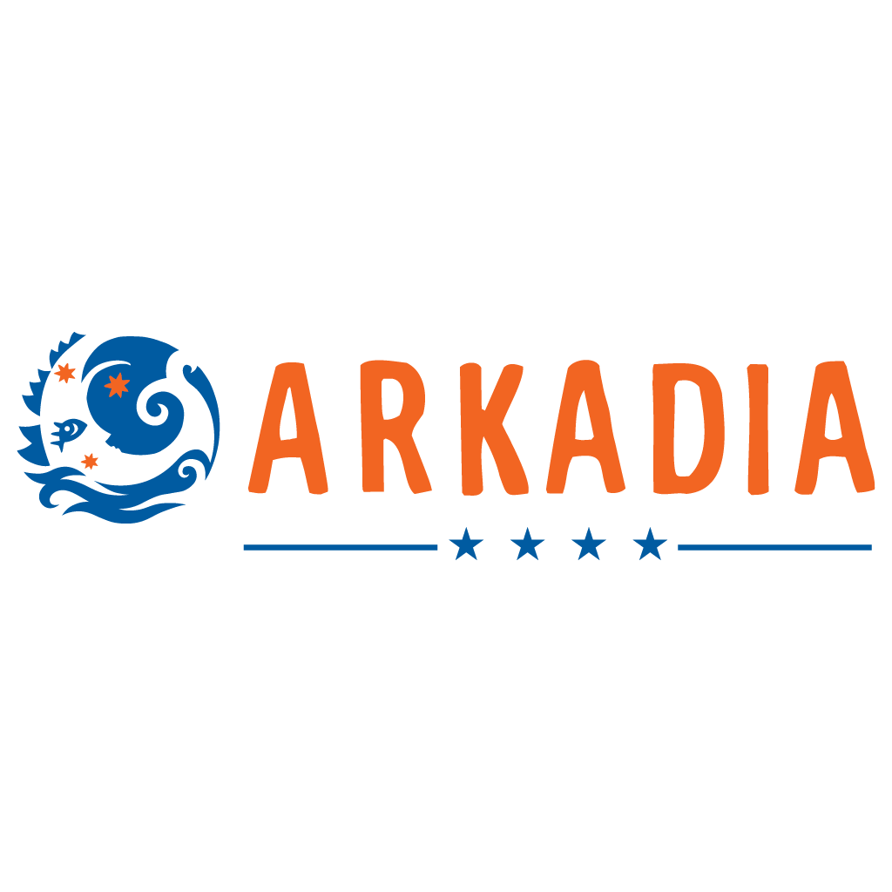
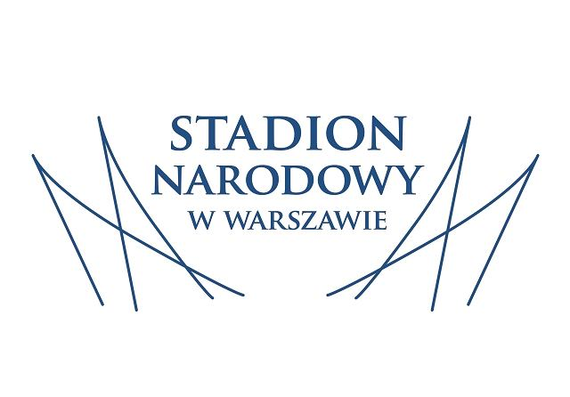
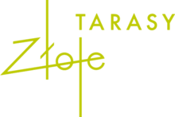
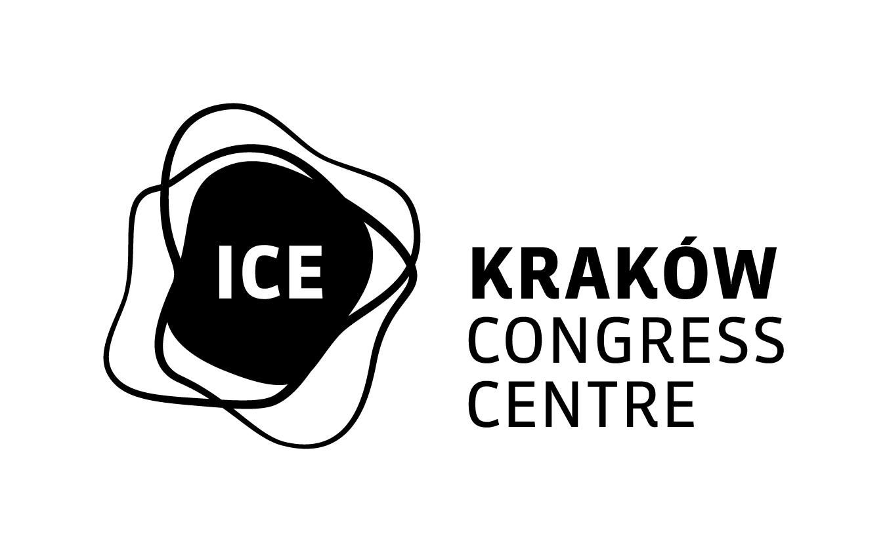

Firma
Pracownia architektoniczna Architeq działa już ponad 10 lat na regionalnym, ogólnopolskim, jak i europejskim rynku projektowo-budowlanym.
Założycielem oraz wiodącym projektantem jest architekt: Michał Jóźwik.
Główne założenia naszej firmy to: profesjonalizm, efektywność, skuteczność działania oraz zadowolenie i satysfakcja inwestora ze zrealizowanej inwestycji.
Tworzymy projekty indywidualne, dostosowane do wszelkich potrzeb oraz wymagań naszych klientów. Ścisła współpraca z inwestorem oraz twórcze i indywidualne podejście do projektowania architektonicznego pozwalają osiągnąć najlepsze efekty.
Architeq jako biuro projektowe czy biuro architektoniczne składa się z trzech specjalistycznych bloków takich jak:
Pracownia Architektoniczna odpowiedzialna za Architekturę i Projekty Zagospodarowania Terenu, Projekty domów, Projekty ogrodów.
Pracownia Wnętrz, która odpowiedzialna jest za projekty wnętrz usługowych, handlowych i prywatnych, trzecim blokiem jest blok Remonty i Budowy, gdzie realizujemy inwestycje budowlane i projekty pod klucz w charakterze generalnego wykonawcy jako wykonawcy budowlani kielce.
Architektura jest dla nas postrzeganiem świata poprzez "właściwą" formę, linię, barwę, która w doskonały sposób spełnia wymagania funkcjonalno-przestrzenne.
Cel
Obrany cel to dostarczenie naszym klientom projektów na najwyższym poziomie i z największą precyzją oraz dokładnością wykonania. Przez cały czas prowadzenia naszego biura doskonalimy własne umiejętności oraz rozwijamy umiejętności naszych pracowników, rozwijamy warsztat pracy, naszą wiedzę o projektowaniu i nowych trendach, standardach oraz wchodzących na rynek nowych rozwiązań technologicznych stosowania materiałów budowlanych i wykończeniowych.
Pragniemy być ekspertami i profesjonalistami w naszej branży i chcemy dzielić się naszą wiedzą z naszymi klientami, inwestorami oraz partnerami.
Remonty i budowy
Jako grupa remontowo-budowlana jesteśmy odpowiedzialni za przygotowanie i realizację procesu budowy.
Do naszych obowiązków należy opracowanie wszystkich elementów, które składają się na inwestycję. Dobór podwykonawców którzy zapewnią największy standard wykonywanych prac i dotrzymają terminów realizacji. Dobór zespołu koordynującego daną inwestycję, kierowników budowy , kierowników robót.
Dajemy naszym klientom poczucie komfortu i bezpieczeństwa a naszym partnerom zaangażowanym we wspólny projekt doskonałą komunikację oraz przejrzyste zasady.
Wiemy jak ważna jest przyjazna atmosfera w trakcie realizacji oraz jak przekłada się na EFEKTYWNĄ, SKUTECZNĄ, TERMINOWĄ pracę wszystkich ludzi zaangażowanych w projekt.
Zarządzanie projektami
ARCHITEQ PRACOWNIA ARCHITEKTONICZNA w oparciu o doświadczenie zdobyte w trakcie projektowania zróżnicowanych tematycznie projektów architektonicznych, zapewnia wszystkie składowe profesjonalnej realizacji projektu budowlanego i wykonawczego
Zarządzanie projektem to inaczej optymalizacja czasu i kosztów w procesie projektowym i realizacyjnym. Hasło przewodnie to:
EFEKTYWNIE, SKUTECZNIE, TERMINOWO.
Project Manager jest każdorazowo przydzielany do projektu, jest odpowiedzialny za skoordynowanie wszystkich branż projektowych oraz prac mających na celu zakończenie projektowania. Za dopilnowanie realizacji inwestycji odpowiedzialny jest koordynator realizacji projektu.
Naszym standardem jest oddanie naszemu klientowi gotowego produktu w postaci projektu,bądź uzyskaniu pozwolenia na użytkowanie w uzgodnionym terminie.
Proces projektowy
Po przeprowadzeniu pierwszych spotkań z klientem, rozmów i analiz związanych z potencjałem działki, przechodzimy do stworzenia koncepcji oraz spisu niezbędnych dokumentów formalno-prawnych, które są konieczne do dalszej pracy projektowej. Po przygotowaniu koncepcji funkcjonalnej, która jest prezentacją naszych umiejętności projektowych, nasz zespół zagłębia się w szczegóły techniczne i materiałowe. Przeprowadzamy szereg doświadczeń wizualnych by stworzyć oczekiwany efekt proponowanych rozwiązań architektonicznych. Po akceptacji koncepcji przechodzimy do opracowywania projektu budowlanego. Projekty są konsultowane ze wszystkimi projektantami branżowymi, rzeczoznawcami w zakresie BHP; Sanepid i P.POŻ.
Zakres działalności
MIASTA W KTÓRYCH PROJEKTUJEMY:
Od 2008 roku znajdujemy się w Warszawie i zajmujemy się projektowaniem architektonicznym. Początki praktyki projektowej datujemy jednak na rok 2004, kiedy to stawialiśmy pierwsze kroki projektowe w Krakowie i Warszawie. Dla naszych klientów zrealizowaliśmy autorskie projekty budynków mieszkalnych jednorodzinnych, budynków wielorodzinnych, projekty budynków użyteczności publicznej, projekty budynków usługowo-handlowych, projekty budynków przemysłowych w fazie koncepcyjnej, budowlanej i wykonawczej.
PROJEKTOWANE PRZEZ NAS OBIEKTY:
Jesteśmy doświadczonym zespołem architektów i inżynierów. Realizujemy nasze autorskie projekty dla inwestorów z całej Polski. Jesteśmy zespołem projektowym posiadającym wiedzę oraz uprawnienia do wykonywania zawodu. Pracownia architektoniczna posiada również ubezpieczenie od bezpośrednich, jak i pośrednich skutków błędów zawodowych.
Naszą specjalizacją są projekty i realizacje budynków mieszkalnych wielorodzinnych, budynków użyteczności publicznej oraz budynków dla branży RETAIL czy też galerii handlowych. Specjalizujemy się i kształcimy w budownictwie energooszczędnym i pasywnym, oraz w projektowaniu obiektów w certyfikacji LEED i BREAM. Projekty domów typowych a dla nas projekty domów indywidualnych wykonujemy w całej Polsce bez znaczenia na lokalizację. Jesteśmy mobilni i do dyspozycji inwestora. Cenimy architekturę i sztukę związaną z tym kierunkiem. Dbamy o charakter miejsca i architekturę towarzyszącą naszym projektom wykonywanym pod okiem specjalistów i pasjonatów.
REALIZACJA - REMONTY I BUDOWY
Projektujemy, nadzorujemy, wykonujemy oraz wyposażamy całe inwestycje. Przy współpracy pełnobranżowego projektowo-wykonawczego zespołu działamy skutecznie na całym rynku ogólnopolskim. Głównie w realizacji projektów wnętrz prywatnych inwestycji biurowych i prywatnych wnętrz mieszkalnych.
Fakty i realizacje
- 2016r. Otrzymanie nagrody Pritzkera, jednej z najwiekszych nagród architektonicznych na świecie.
- 2015r. Projekt nowej siedziby Unii Europejskiej w Brukseli
- 2012r. Początek działalności za granicą, pierwsze projekty w Niemczech, Francji, Belgii.
- 2009r. Rozpoczęcie działalności ogolnopolskiej, przygotowawyanie kolejnych wielkich projektów takich jak np. Dworzec Centralny w Warszawie, Stadion Narodowy w Warszawie
- 2007r. Pierwsza realizacja i pierwszy projekt pod nazwą ZŁOTE TARASY - budynek zdobył pozytywną opinię całego miasta i nie tylko. W 2008 roku zdobyliśmy Srebrnego żurawia za tą właśnie inwestycję.
- 2006r. Rozpoczęcie pracy na terenie województwa świętokrzyskiego, łódzkiego oraz lubelskiego.
- 2005r. Założenie działalności na terenie Warszawy.
Historia
Od 2006 oferujemy kompleksowe rozwiązania dla naszych Klientów ,dzięki którym można śmiało planować realizację inwestycji w jednej firmie. Zajmujemy się wszystkim od początku do końca, a nasz Klient ma czas na realizację swoich celów,planów i obowiązków. Uczestniczymy w każdym etapie prac projektowych i wykonawczych: projektując, budując, wyposażając oraz nadzorując projekt od "A" do "Z". Przez ostatnie lata zrealizowaliśmy projekty architektoniczne w zakresie koncepcyjnym, budowlanym, wykonawczym wraz z nadzorami autorskimi i budowlanymi. Powstały projekty o zróżnicowanej tematyce :mieszkaniowej - jedno i wielorodzinnej, budynki użyteczności publicznej, budynki handlowe i usługowe, wnętrza komercyjne, usługowe oraz prywatne wnętrza domów i mieszkań. Uczestniczyliśmy w tworzeniu nowych brandów, przyczynialiśmy się do rozwoju już istniejących na rynku polskim i zagranicznym, rewitalizowaliśmy istniejące galerie handlowe, tworzyliśmy standardy wykonawcze salonów znanych marek na rynku budowlanym, jak i handlowym, wyposażaliśmy przestrzenie biurowe w meble i wszystkie niezbędne akcesoria.
Mieliśmy okazję pracować zarówno dla prywatnych Inwestorów, placówek państwowych, firm deweloperskich z Polski i Europy ,jak i firm które stawiały pierwsze kroki na rynku deweloperskim. Za każdym razem wynosiliśmy z tego nowe doświadczenia, czasem nauczki, często cenne zawodowe kontakty, również serdeczne przyjaźnie, które trwają do dziś i owocują dalszymi zleceniami i realizacjami. Zawdzięczamy to dbałości nie tylko o sam projekt i dobro Inwestora, ale i wyjątkową atmosferę pracy w zespole pełnobranżowym i wykonawczym oraz relacje – zarówno z klientem, jak i podwykonawcami. Zespół projektowy jest dobierany staranie i stawiane są naszym pracownikom wysokie wymagania dzięki temu możemy śmiało powiedzieć że jesteśmy świadomi naszej pracy i spełniamy oczekiwania naszych Klientów.
Doświadczenie i zasoby
Doświadczenie zdobywaliśmy w renomowanych biurach projektowych i wykonawczych w Polsce i za granicą. W skład zespołu projektowego wchodzą architekci, architekci wnętrz, informatycy, graficy komputerowi, inżynierowie. Projektujemy i realizujemy nasze produkty z pasją i zaangażowaniem. Pracujemy na legalnym oprogramowaniu 3D max, V-Ray, AutoCAD, Photoshop. Itp. Dzięki temu nasza praca jest efektywna i skuteczna. Dzięki inwestycji w pracownię projektową osiągamy najwyższą jakość oferowanych usług naszym klientom.
Pracownia wnętrz
Pracownia wnętrz to sektor naszej działalności, który odpowiedzialny jest za kompleksowe przygotowanie i opracowanie projektów wykonawczych wnętrz. Projektujemy i realizujemy wnętrza komercyjne, państwowe, przestrzenie biurowe i prywatne wnętrza domów i mieszkań. Odpowiedzialni jesteśmy za kwestie zamówień i doborów materiałów oraz za projektowanie mebli i ich realizację. Oferujemy również naszym klientom poszczególne materiały wykończeniowe np. podłogi, tapety, elementy dekoracyjne jak np. beton architektoniczny, kominki i inne elementy wchodzące w skład wykończenia danego wnętrza.
Z naszych usług skorzystali:
- 
- 
- 
- 